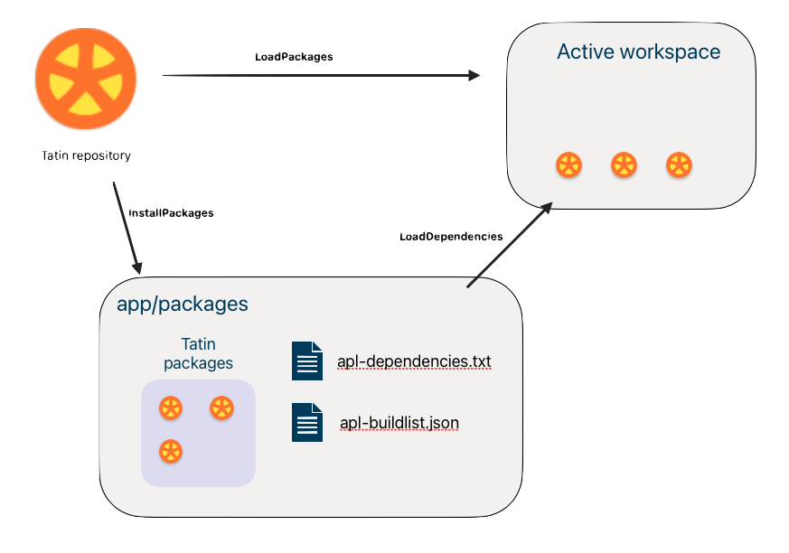

Tatin’s load and update strategy
How Tatin deals with conflicting requirements for package versions
As you incorporate packages and their dependencies into your application, you see different packages sometimes specify as dependencies different versions of the same package. As a package manager, Tatin has policies for resolving these conflicts.
You can get started without grasping these policies, but they have important consequences you will eventually need to understand.
Minimum version selection
Suppose you need packages, Foo and Goo.
Both rely on package Zoo; but while Foo requests Zoo 1.1.1,
Goo requires version 1.2.0.
Zoo-1.0.0
Zoo-1.1.0
Foo ---> Zoo-1.1.1
Goo ---> Zoo-1.2.0
Zoo-1.3.0
Zoo-2.0.0
The best available version 1 of Zoo is 1.3.0.
There is also a later major version: 2.0.0.
Version 2.0.0 is not an option, because it is considered a completely different package and so ignored.
From semantic versioning we know Goo relies on features of Zoo new in version 1.2.0,
and would break on version 1.1.1, which doesn’t have them.
Strategy options
Several strategies are possible:
- Load both versions of
Zoo: letFoouse 1.1.1 andGoo1.2.0. - Load
Zooversion 1.2.0 and letZooandGooboth use it. - Check the server, load the latest version available (1.3.0) and use that.
Each of these options is used by different package managers in the wild. There is no consensus on what is best.
Strategy (3) appeals to many programmers: you are always up-to-date, and you always get the latest fixes when you build your application. Great!
But on reflection it looks much less appealing:
- Build your application, including updated dependencies
- Run your test cases; they all pass
- Rebuild your application without changing anything
- Rerun your test cases; but this time they fail
This situation arises if, between the first and second build, the author of a dependency releases a new version with bugs in it. The second build fetches it, producing a different outcome – even though you haven’t made any changes.
Tatin’s strategy
As appealing as an automated update mechanism might seem, you’d want your builds to be 100% reproducible, right?
So, when asked to load installed packages, Tatin will do exactly that:
- load the packages defined as required by the configuration files of the main packages
FooandGoo - except when a package is requested more than once, and with different minor and/or patch numbers, Tatin uses the latest installed version (which might or might not be the latest one available)
Updating dependencies
Tatin does not update dependencies for you, but helps you discover whether later packages are available.
]CheckForLaterVersions
]ReInstallDependencies
ReInstallDependencies
In our example
Zoois requested and installed twice- Tatin loads 1.2.0 just once (because it is requested by
Goo) - 1.3.0 is ignored because it is not requested and so not installed
This means Foo will also use version 1.2.0 of Zoo.
This strategy is called Minimal Version Selection (MVS). It guarantees that when you rebuild you get the same result, but it will grab the latest installed version.
Forcing updates
Suppose a package of yours depends on someone else’s package Foo, which in turn depends on Goo 1.1.0 – and while using Foo you discover Goo 1.1.0 has a bug.
You write to the author of Foo, saying Goo 1.1.1 is available and fixes that very bug, but you get no reply, and you have only two weeks to your deadline.
Solution
Create a package Dummy that does nothing, but declares a dependency on Goo 1.1.1.
Voila! Thanks to MVS, everything works.
Comparing versions
As long as the patch is a digit, precedence is easy to determine.
Precedence is obvious for
group-name-1.0.0
group-name-1.1.0
less so for
group-name-1.0.0-alpha
group-name-1.1.0-beta
and cannot be determined with
group-name-1.0.0-TryFeature1
group-name-1.1.0-FixFor234
Packages, once published, cannot be altered. So if the patch contains a text description, Tatin uses publication date to determine the correct order.
Loading dependencies
Imagine these packages all hosted by a Tatin server with alias MyTatin.
mygroup-Foo-1.0.0 ---> Zoo-1.1.1
mygroup-Goo-2.1.0 ---> Zoo-1.2.0
Zoo-1.3.0
While Foo relies on Zoo 1.1.1, Goo needs Zoo 1.2.0.
What does Tatin do about this?
It depends on what you do.
Let’s first load Zoo and Goo into the workspace, the usual way to inspect a package:
]TATIN.LoadPackages [MyTatin]/mygroup-Foo-1.0.0 #.MyPkgs
#.MyPkgs.Foo
]TATIN.LoadPackages [MyTatin]/mygroup-Goo-2.1.0 #.MyPkgs
#.MyPkgs.Goo
#.MyPkgs.⎕NL ⍳16
Foo
Goo
Getting the latest version
Suppose version 1.3.0 of Foo is the latest available with major number 1,
then this would have been sufficient:
]TATIN.LoadPackages [MyTatin]/mygroup-Foo-1 #.MyPkgs
Note neither the minor nor the patch number has been specified.
Suppose version 2.1.0 of Goo is the very latest version available, and that’s the version you want to use,
then this would have been sufficient:
]TATIN.LoadPackages [MyTatin]/mygroup-Goo #.MyPkgs
In this case not even the major number has been specified.
You wanted Foo and Goo loaded into #.MyPkgs, and that's exactly what Tatin did.
But where are the dependencies?
Where Tatin really keeps packages
#.MyPkgs just contains references to where the packages have been loaded into, the namespace #._tatin.
Looking under the covers:
#._tatin.⎕NL 9
mygroup_Foo_1_0_0
mygroup_Goo_2_1_3
mygroup_Zoo_1_1_1
mygroup_Zoo_1_2_0
Both versions of Zoo have been loaded.
That’s because the two Load operations are independent, so minimal version selection cannot be applied.
]CheckForLaterVersion
CheckForLaterVersion
Installing packages
To incorporate packages into an application, they must be installed.
In the following example, we install two packages, Foo and Goo. Both require Zoo, so Zoo gets installed as a side effect.
⎕NEXISTS '/myPkgs'
0
]TATIN.InstallPackages [MyTatin]/mygroup-Foo-1.0.0 /myPkgs/
/myPkgs/mygroup-Foo-1.0.0
]TATIN.InstallPackages [MyTatin]/mygroup-Goo-2.1.0 /myPkgs/
/myPkgs/mygroup-Goo-2.1.0
⍪⊃⎕NINFO ⍠ 1⊢'/myPkgs/*'
/myPkgs/apl-buildlist.json
/myPkgs/apl-dependencies.txt
/myPkgs/mygroup-Foo-1.0.0
/myPkgs/mygroup-Goo-2.1.0
/myPkgs/mygroup-Zoo-1.1.1
/myPkgs/mygroup-Zoo-1.2.0
Compare the dependency file and the build list:
⊃⎕NGET '/myPkgs/apl-dependencies.txt' ⍝ dependency file
mygroup-Foo-1.0.0
mygroup-Goo-2.1.0
json←⊃⎕NGET'/myPkgs/apl-buildlist.json' ⍝ build list
#.q←⎕JSON ⍠ ('Dialect' 'JSON5') ⊢ json
⍉↑#.q.(principal packageID)
1 mygroup-Foo-1.0.0
0 mygroup-Zoo-1.1.1
1 mygroup-Goo-2.1.0
0 mygroup-Zoo-1.2.0
Above, the first column flags the principal packages.
- The dependency file lists the principal packages installed.
- The build list comprises not only the two principal packages but also the dependencies.
Loading installed packages
Loading packages puts them in your workspace; installing packages puts them in your file system.
Loading installed packages lets Tatin use MVS to optimise what it loads.

Load installed packages with command ]LoadDependencies.
Its argument is a folder with files apl-dependencies.txt and apl-buildlist.json,
created when you installed your first package there.
You can also specify a second argument: where to create the references pointing to the principal packages.1
]TATIN.LoadDependencies /myPkgs/ #.Temp
If the command finds the dependency file is newer than the build list, it checks for inconsistencies: if none, it reconstructs the build list from scratch.
Then it prunes the build list and loads the remaining packages.
In our example the pruning eliminates Zoo 1.1.1:
rather than loading Zoo twice, Tatin loads only the latest installed version.
Both Foo and Goo will use Zoo version 1.2.0.
Remove a principal package
Suppose you no longer need Goo.
To remove it, use either command ]UnInstallPackage or API function UnInstallPackage.
This will remove not only the principal package, but any of its dependencies that are neither principal packages nor dependencies of other packages.
Do not manually remove packages from your application’s packages folder.
Tatin manages these dependency relations; don’t interfere.
Implicit downgrading
Removing a principal package might imply a downgrade.
Consider, say, these packages (dependencies indented):
group-foo-1.0.0
group-zoo-1.1.0
group-boo-1.0.0
group-zoo-1.0.0
Minimal version selection (MVS) means both foo and boo use zoo 1.1 when loaded.
What happens if you remove boo?
Either could be argued:
zoo-1.1.0should survive this and still be used- a package not required anywhere shouldn’t be used
A full implementation of MVS requires (1). For now, Tatin uses (2) as a more pragmatic approach.
It is not obvious what is best here. Tatin’s strategy might change after feedback.
Add a package manually
To add a package that has no dependencies you could
just add it to the file apl-dependencies.txt
and copy the package over.
That would not cause a problem.
When the LoadDependencies command is next issued,
Tatin sees the file apl-dependencies.txt changed after apl-buildlist.json was last modified,
performs some health checks, and if all is well, recreates the build list.
(This is insurance against people manually introducing errors into apl-dependencies.txt)
Downgrade
Sometimes you might need to downgrade, for example from a version you find buggy, to an older version known to be okay.
Tatin does not offer help here; you need to do this yourself.
-
(Defaults to
#if that is your current namespace. If you are, say, in#.foothen Tatin asks whether to install into#or#.foo.) ↩